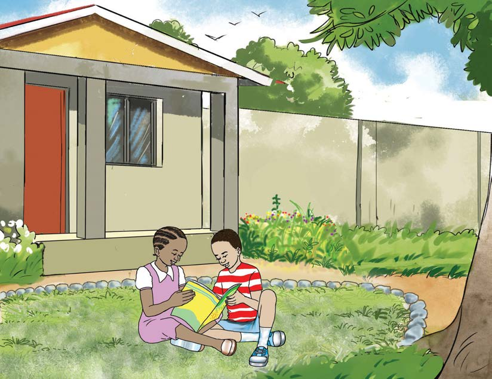

Read aloud or sign the following story:
The Sun and the Moon
Rose likes to read a story every evening. Her story book has many interesting stories. One day, Rose wanted to read a story about the sun and the moon. Her friend, Baraka, went to see her. “Hello Rose,” he said, “Can we read your book together?”
“Sure! Let’s read a story about the Sun and the Moon,” replied Rose.

Once upon a time, there were two friends: the Sun and the Moon. The Moon told the Sun, “I’m more important than you. I don’t sleep when you are asleep. I help the